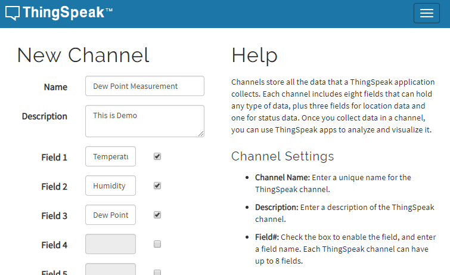

ThingSpeakの利用
最終更新日: 2019/01/15 | 編集者: matusr8k
最終更新日: 2019/01/15 | 編集者: matusr8k
ThingSpeakとは、無料で利用可能なMathWorks社が提供するIoTプラットフォームであり、IoTデバイスを利用してデータの収集ができ、クラウド上でそのデータを可視化、解析したり、行動のトリガーとして利用することができます。
ThingSpeakを利用するには、まず、以下のリンクからThingSpeakのトップページへ移動します。
IoT Analytics - ThingSpeak Internet of Things
緑色のGet Started For Freeボタンをクリックします。
MathWorksアカウントを登録するよう表示されるので、登録します。
続けるとMy Channelsのページが開かれるので緑色のNew Channelをクリックします。

New ChannelのName、Fieldを設定し、ページ下部のSave Channelをクリックしてチャンネルを作ります。
試しにMathWorks公式の入門（参考リンク）を実装してみましょう。以下の通りに入力し、チャンネルを作成します。
ここで作られたチャンネルのChannel IDとAPI Keysタブから見ることのできるWrite API Keyを記録しておきます。
次に作られたチャンネルのPrivate Viewタブを選択し、緑色のMATLAB Analysisボタンをクリックします。
すると以下の画面が出てくるのでCustomにチェックを入れて作成します。
作成後の画面にMATLAB Codeというフォームがあるはずなので、以下のコードを入力します。
このときwriteChIdには先ほど記録したChannel IDを、writeKeyには同じくWrite API Keyを記述しておきます。
% Enter your MATLAB Code below
readChId = 12397;
writeChId = ZZZZZ; % Replace with your channel number
writeKey = 'XXXXXXXXXXXXXXXX'; % Replace with your channel write key
[temp,time] = thingSpeakRead(readChId,'Fields',4,'NumPoints',20);
humidity = thingSpeakRead(readChId,'Fields',3,'NumPoints',20);
tempC = (5/9)*(temp-32);
b = 17.62;
c = 243.5;
gamma = log(humidity/100) + b*tempC./(c+tempC);
dewPoint = c*gamma./(b-gamma)
dewPointF = (dewPoint*1.8) + 32;
thingSpeakWrite(writeChId,[temp,humidity,dewPointF],'Fields',[1,2,3],...
'TimeStamps',time,'Writekey',writeKey);Save and Runをクリックした後、先ほど作成したチャンネルのページを開きます。すると、グラフが表示されます。
データの解析 - MATLAB & Simulink - MathWorks 日本